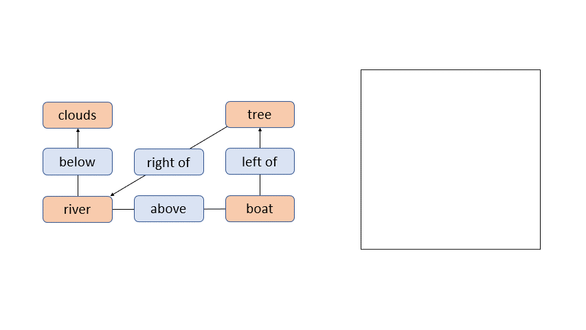

About Me
I graduated with a Ph.D. in Computer Vision ath the University of Catania under the supervision of Professor Concetto Spampinato
I worked on generative models conditioned on different types of input, with applications in radio astronomy
Projects

TRF-SG2IM
A generative model conditioned on scene graphs and fully-based on transformers
Project Page
More
Selected Publications
Transformer-Based Image Generation from Scene Graphs
Renato Sortino, Simone Palazzo, Concetto Spampinato
Computer Vision and Image Understanding (Elsevier)